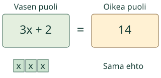
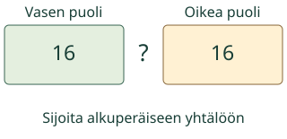
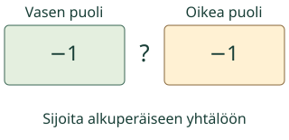

<link rel="stylesheet" href="lesson.css"><section class="eq14" data-b14-equation>


<section data-teaching-step="1" data-lesson-role="teaching-step">
<div class="intro"><p>Aava etsii tuntemattoman. Tee sama sallittu muutos yhtälön molemmille puolille.</p></div>
</section>


<section data-teaching-step="2" data-lesson-role="teaching-step">
<section data-explore aria-label="Tasapaino säilyy" data-lesson-role="worked-example"><button disabled type="button" data-action="step">Näytä seuraava vaihe</button><div data-model></div><p data-caption>3·x+2=14. Mikä sallittu muutos auttaa?</p><details data-tools data-lesson-role="teaching-step"><summary>Vaihda mallia tai toista</summary><label>Malli<select disabled data-model-case><option value="positive">3x + 2 = 14</option><option value="minus">3x − 2 = 10</option><option value="both">5x + 1 = 2x + 10</option><option value="negative">2x + 5 = −1</option><option value="fraction">2x = 1</option><option value="zero">4x + 2 = 2</option></select></label><button disabled type="button" data-action="play">Toista vaiheet</button> <button disabled type="button" data-action="stop">Pysäytä</button> <button disabled type="button" data-action="model-reset">Mallin alkuun</button><p>Voit tutkia vaiheet vapaasti tai vastata suoraan. Toisto ei käynnisty itsestään.</p></details></section>
</section>


<nav data-lesson-role="metadata"><a href="#eq14-explain">Näin ajattelet</a><a href="#eq14-practice">Kokeile itse</a><a href="#eq14-teacher">Paperille</a></nav>


<section data-teaching-step="3" data-lesson-role="teaching-step">
<details id="eq14-explain" data-lesson-role="worked-example"><summary>Näin ajattelet</summary><h3>Sama vähennys, sama jako</h3><p>Yhtälössä 3x + 2 = 14 vähennä 2 molemmilta puolilta: 3x = 12. Jaa molemmat puolet luvulla 3: x = 4. Tarkistus alkuperäisessä yhtälössä: 3 · 4 + 2 = 14. Ensin näkyy kolme samanlaista x-osaa; yhden osan arvo saadaan jakamalla koko määrä kolmella.</p><figure data-lesson-role="worked-example"><figcaption>Ratkaistu esimerkki, ei alkutila.</figcaption></figure><h3>Tuntematon molemmilla puolilla</h3><p>Yhtälössä 5x + 1 = 2x + 10 vähennä 2x kummaltakin puolelta: 3x + 1 = 10. Vähennä 1: 3x = 9. Jaa kolmella: x = 3. Sijoittamalla saat 16 = 16. Vaihtoehtoinen sallittu reitti, kuten kaikkien merkkien vaihto kertomalla −1:llä, säilyttää ratkaisun.</p><figure data-lesson-role="worked-example"><figcaption>Ratkaistu esimerkki, ei alkutila.</figcaption></figure><h3>Negatiivinen ja murto-osa ovat lukuja</h3><p>Yhtälössä 2x + 5 = −1 vähennä 5: 2x = −6. Jaa kahdella: x = −3. Tässä x on luku, ei negatiivinen fyysinen massa. Yhtälössä 2x = 1 sama jako antaa x = 1/2 = 0,5. Kokonaisluvun arvaaminen ei riitä kaikkiin yhtälöihin.</p><figure data-lesson-role="worked-example"><figcaption>Ratkaistu esimerkki, ei alkutila.</figcaption></figure><h3>Sama idea matkassa</h3><p>Tasainen nopeus on 18 km/h ja matka 36 km. Yhtälössä 36 = 18x jaa molemmat puolet 18:lla: x = 2 tuntia. Nopeus oletetaan vakioksi. Näytön esitys ei mittaa todellista pyöräilyä.</p><h3>Vältä tämä ansa</h3><p>Vain toisen puolen muuttaminen voi muuttaa ratkaisun. Sama kertominen nollalla antaa aina 0 = 0 ja hukkaa alkuperäisen ehdon. Nollalla ei voi jakaa. Käytä kertomisessa ja jakamisessa nollasta poikkeavaa lukua. Siirtäminen puolelta toiselle on lyhennys samasta laskutoimituksesta molemmille puolille.</p><p>Ennusta ennen seuraavaa vaihetta: mitä osille tapahtuu ja mikä pysyy samana?</p></details>
</section>


<section data-teaching-step="4" data-lesson-role="teaching-step">
<details data-transform data-lesson-role="teaching-step"><summary>Kokeile omaa sallittua muutosta</summary><p>Kirjoita yhtälö ja tee valittu laskutoimitus molemmille puolille. Tämä näyttää muunnoksen, ei arvioi itsenäistä ratkaisumenetelmää.</p><label>Yhtälö<input disabled type="text" data-equation maxlength="128" value="3*x+2=14"></label><label>Sama toimi molemmille<select disabled data-operation><option value="subtract">Vähennä</option><option value="add">Lisää</option><option value="multiply">Kerro</option><option value="divide">Jaa</option></select></label><label>Luku<input disabled type="text" data-amount inputmode="text" maxlength="128" value="2"></label><button disabled type="button" data-action="apply">Näytä uusi yhtälö</button><p data-transformed data-result="neutral">Muutos odottaa kokeilua.</p><p>Kertominen ja jakaminen vaativat nollasta poikkeavan luvun. 3x + 2 = 14 ei ole sama ehto kuin nollalla kerrottu 0 = 0.</p></details>
</section>


<section data-teaching-step="5" data-lesson-role="teaching-step">
<section id="eq14-practice"><h2>Kokeile itse</h2><p>Vastaa itse. Malli, selitykset ja vihje ovat valinnaisia.</p><label>Tehtävä<select disabled data-task><option value="positive">1. Ratkaise 3x + 2 = 14. Kirjoita x:n arvo.</option><option value="minus">2. Ratkaise 3x − 2 = 10. Mitä teet ensin molemmille puolil</option><option value="both">3. Ratkaise 5x + 1 = 2x + 10.</option><option value="negative">4. Ratkaise 2x + 5 = −1. x saa olla negatiivinen.</option><option value="fraction">5. Ratkaise 2x = 1. Myös murtoluku käy.</option><option value="zero">6. Ratkaise 4x + 2 = 2. Tyhjä ei tarkoita nollaa.</option><option value="transfer">7. Pyöräilijä kulkee tasaisesti 18 km tunnissa. 36 km = 18</option><option value="all">8. Lisätutkimus: yhtälö 2x + 3 = 2x + 3. Onko ratkaisuja y</option><option value="none">9. Lisätutkimus: yhtälö 2x + 3 = 2x + 4. Onko ratkaisuja y</option></select></label><p data-question>Ratkaise 3x + 2 = 14. Kirjoita x:n arvo.</p><div data-answer-group="solve"><label>x:n arvo<input disabled data-answer type="text" inputmode="text" maxlength="128" placeholder="esim. −3 tai 1/2" autocomplete="off"></label></div><div data-answer-group="set" hidden><label>Ratkaisujoukko<select disabled data-answer><option value="">Valitse</option><option value="one">Yksi luku</option><option value="none">Ei yhtään ratkaisua</option><option value="all">Kaikki reaaliluvut</option></select></label></div><button disabled type="button" data-action="check">Tarkista</button><p data-feedback data-result="neutral" aria-live="polite">Tarkista, kun olet valmis.</p><details data-lesson-role="hint"><summary>Tarvitsen vihjeen</summary><p>Sievennä puolet. Poista toiselta puolelta x-termit tekemällä sama vähennys molemmille. Poista vakio samalla tavoin. Jaa lopuksi x:n kertoimella vain, jos kerroin ei ole nolla. Tarkista alkuperäisessä yhtälössä.</p></details></section>
</section>


<section data-teaching-step="6" data-lesson-role="teaching-step">
<details data-lesson-role="worked-example"><summary>Lisää tutkittavaa</summary><p>Tutki 2x + 3 = 2x + 3 ja 2x + 3 = 2x + 4. Kun x-termit poistuvat, ensimmäinen antaa 3 = 3 (kaikki reaaliluvut), toinen 3 = 4 (ei ratkaisuja). Kumpaakaan ei ratkaista jakamalla nollalla.</p></details>
</section>


<details id="eq14-teacher" data-lesson-role="teacher-note"><summary>Opettajalle, paperille ja lopuksi</summary><p>Tee paperille 3x + 2 = 14 kolmesta samasta merkistä ja kahdesta irtomerkistä. Poista kaksi molemmilta puolilta ja jaa jäljelle jäänyt kokonaisuus kolmeen yhtä suureen osaan. Merkitse jokaiselle riville molemmille puolille tehty toimi. Negatiivisiin lukuihin siirrytään symbolein, ei negatiivisilla punnuksilla.</p><p data-lesson-role="question"><strong>Lopuksi:</strong> Ratkaise 2x − 3 = 5 ja tarkista. Miksi yhtälön kertominen nollalla ei ole turvallinen ratkaisuvaihe?</p><p>Luokat 7-9. Tavoite: ensimmäisen asteen yhtälön ratkaiseminen tasapainoperiaatteella. Kanoniset välttämättömät ja vahvasti tukevat taidot näkyvät navigaatiossa; malli tai paikallinen harjoitus ei lisää kovia esitietovaatimuksia.</p><p>Kaavio näyttää nimettyjä lukuja ja lausekkeita, ei fyysisen vaa’an mittausta. Negatiiviset ja murto-osaiset ratkaisut ovat lukuja. Tarinassa x:n yksikkö ja sallittu ei-negatiivinen tai positiivinen arvo nimetään.</p><p>Syöttö tukee etumerkillisiä kokonais- ja desimaalilukuja sekä murtolukuja, enintään 128 merkkiä. Desimaalissa normalisoinnin jälkeen enintään 18 kokonais- ja 9 desimaalinumeroa. Etu-/loppunollat ja samansuuruiset murtoluvut eivät muuta arvoa. Ei eksponenttimuotoa tai pyöristystä. Yhtälöissä yksi x, ensimmäisen asteen lausekkeet, sulut enintään 12 sisäkkäin ja jako nollasta poikkeavalla vakiolla. Muuttujalla jakoa tai x²-termejä ei tueta. Paperille voi kirjoittaa muitakin perusteltuja tapoja.</p><p>Toiston 650 ms on esitysväli, ei matemaattinen suure tai aikaraja. Kaikki vaiheet voi pysäyttää ja palauttaa. Harjoitus tarkistaa nykyisen vastauksen, ei itsenäisyyttä, muistissa säilymistä tai muodollista hallintaa. Ei henkilökohtaista historiaa, ääni-/puhepakkoa, pakollista mallireittiä tai esineiden nimeämistä.</p></details><noscript data-lesson-role="metadata"><p>Ilman JavaScriptiä alkumalli ja ratkaistut esimerkit näkyvät. Vastaa paperille. Vuorovaikutus ja paikallinen tarkistus tarvitsevat JavaScriptin.</p></noscript></section>
